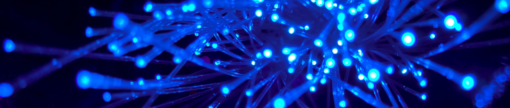

1.0 Network Fundamentals
In this section, we will cover...
- Network Hardware
- How the Hardware is Physically Organized in a Given LAN/WAN,
- Models to Describe How Software and Hardware Interface,
- Network Protocol Basics,
- Virtualization
2.0 Network Access
In this section, we will cover...
- How to Configure and Verify VLANs
- Analyze Interswitch Connectivity
- Layer 2 Protocols
- EtherChannel
- Wireless Architecture
- Physical WLAN Structure
- AP and WLC Management Connections
- Configure LAN for Clients
3.0 IP Connectivity
In this section, we will cover...
- Routing Tables
- Router Forwarding
- Configure IPv4 and IPv6
- Configure OSPFv2
- First Hop Redundancy
4.0 IP Services
In this section, we will cover...
- Configure NAT
- Configure NTP
- DHCP and DNS
- PHB QoS
- Remote Access using SSH
- TFTP/FTP
5.0 Security Fundamentals
In this section, we will cover...
- Define Key Security Concepts
- Describe the Security Program Elements
- Local Passwords
- Password Policies, Elements, Complexity, and Alternatives
- Site-to-Site VPNs
- Control Lists
- Layer 2 Security Features
- Authentication, Authorizaiton, and Accounting
- WPA, WPA2, WPA3
- WLAN using WPA2 PSK and the GUI
6.0 Automations and Programmability
In this section, we will cover...
- Automation and Network Management
- Traditional Controller-Based Networks
- Controller-Based and Software-Defined Architectures
- Campuse Device Management vs Cisco DNA
- ReST-Based APIs
- JSON data
You wanted to know what the [Network] is, learner?
We can load anything from [the Network] clothing, equipment,...anything we need